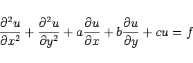

Inhalt Index DeskTop Bronstein

 Differentialgleichungen Partielle Differentialgleichungen Lineare partielle Differentialgleichungen 2. Ordnung Integrationsmethoden für lineare partielle Differentialgleichungen 2. Ordnung
Differentialgleichungen Partielle Differentialgleichungen Lineare partielle Differentialgleichungen 2. Ordnung Integrationsmethoden für lineare partielle Differentialgleichungen 2. Ordnung


Diese Methode zeigt viel Ähnlichkeit mit der RIEMANNschen Methode zur Lösung des CAUCHYschen Problems für hyperbolische Differentialgleichungen.
Bei der Lösung der Aufgabe, eine Funktion u(x,y) zu finden, die in einem vorgegebenen Gebiet der linearen partiellen Differentialgleichung 2. Ordnung vom elliptischen Typ
|  | (9.97a) |
genügt und auf dem Rande dieses Gebiets vorgegebene Werte annimmt, wird als erster Schritt die GREENsche Funktion für dieses Gebiet bestimmt, wobei und  als Parameter aufgefaßt werden. Die GREENsche Funktion muß die folgenden Bedingungen erfüllen:
als Parameter aufgefaßt werden. Die GREENsche Funktion muß die folgenden Bedingungen erfüllen:
| (9.97b) |
| (9.97c) |
mit
| (9.97d) |
wobei U im Punkt den Wert Eins hat und die Funktionen U und V im gesamten Gebiet zusammen mit ihren Ableitungen bis zur zweiten Ordnung einschließlich stetig sein müssen.
wobei D das betrachtete Gebiet bedeutet, S dessen Rand, auf dem die Funktion gegeben ist, und die Ableitung nach der Richtung der Innennormalen des Randes.
Die Bedingung 3 hängt von der Art der zu lösenden Aufgabe ab. Wenn z.B. auf dem Rande des betrachteten Gebiets nicht die gesuchte Funktion selbst gegeben ist, sondern ihre Ableitung nach der Randnormalen, dann muß in Bedingung 3 die Forderung
| (9.97f) |
auf dem Rande erhoben werden. Mit  und
und  werden hierbei die Winkel bezeichnet, die die innere Normale des Randes mit den Koordinatenachsen bildet. Die Lösung lautet in diesem Falle
werden hierbei die Winkel bezeichnet, die die innere Normale des Randes mit den Koordinatenachsen bildet. Die Lösung lautet in diesem Falle
| (9.97g) |